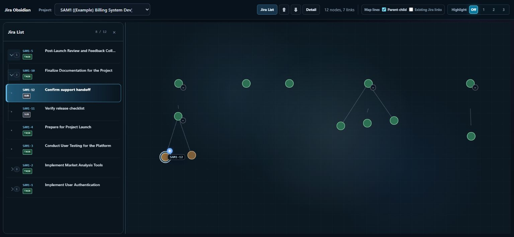
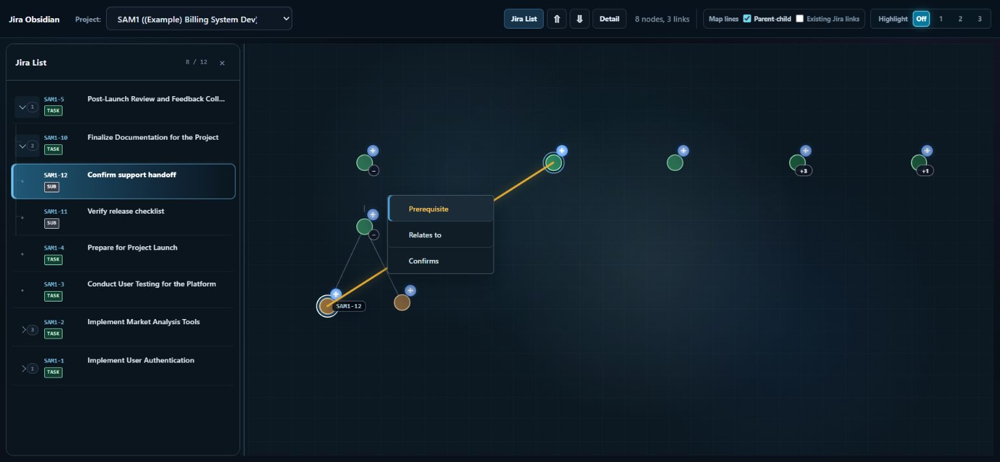
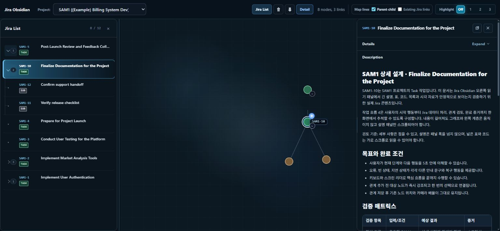

Obsidian Context Map for Jira는 Jira Cloud 프로젝트의 업무 계층과 연결 관계를 지도처럼 탐색하는 앱입니다. 이슈 트리·관계 맵·상세 패널을 함께 보며 업무 사이에 선행·연관·검증 관계를 추가할 수 있습니다. Jira 관리자의 앱 설치와 해당 프로젝트의 조회 권한이 필요합니다.
Jira Obsidian
서비스 소개
주요 기능
- 계층 탐색 — Epic·Task·Subtask 가지를 펼치거나 접고, 목록과 맵에서 같은 이슈 선택
- 관계 관리 — 선행(Prerequisite)·연관(Relates to)·검증(Confirms) 관계 생성·조회·삭제. 기존 Jira 링크는 읽기 전용으로 표시
- 맵 보기 조절 — 이동·확대·축소, 계층선 표시 전환, 선택 이슈의 1~3단계 연결 강조
- 상세 패널 — 이슈 필드·설명·댓글 조회와 Jira 원문 열기. 이슈 내용 수정은 Jira에서 진행
실제 화면


